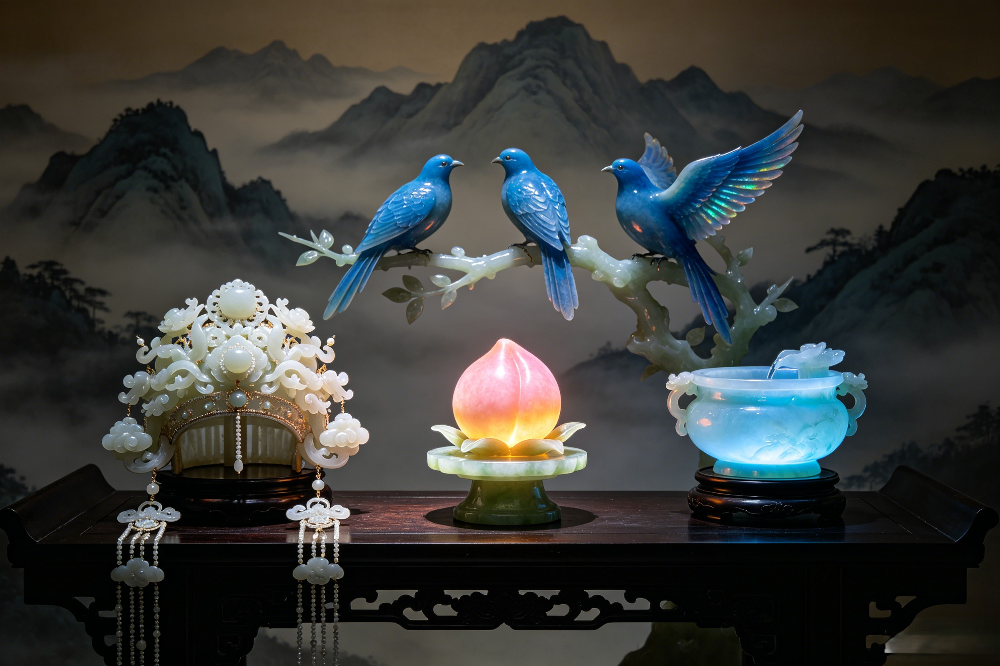

The Instruments of Immortality
The Queen Mother of the West does not carry a sword or a staff. Her arsenal is more profound: fruit that grants eternal life, waters that heal the soul, a crown that signifies absolute authority, and birds that carry her will across the cosmos. These are the sacred instruments of the goddess who holds the keys to immortality itself.
The Peaches of Immortality (蟠桃, Pantao) are the most famous objects in the Queen Mother's arsenal — and arguably the most powerful consumable items in all of Chinese mythology. They grow in her celestial orchard on Kunlun Mountain, where 3,600 trees are arranged in three tiers of ascending potency. The first tier blossoms once every 3,000 years. Eating a single fruit grants ordinary immortality — a body light as air, freedom from disease, and a lifespan beyond counting. The second tier blossoms once every 6,000 years. Its peaches grant eternal youth and the ability to fly through the clouds, ascending to the status of a full immortal. The third tier — the rarest of all — blossoms once every 9,000 years. Its peaches grant an existence that "endures as long as heaven and earth, lasting as long as the sun and moon." These are the peaches reserved for the highest gods: the Jade Emperor, Taishang Laojun, the Buddha, and the great bodhisattvas. But the peaches are not merely food — they are instruments of political control. By controlling who eats them, the Queen Mother controls the hierarchy of heaven. Every 3,000, 6,000, or 9,000 years, the Peach Banquet reaffirms the status of every being in the celestial realm. To be invited is to be acknowledged as an immortal of standing. To be excluded — as Sun Wukong discovered — is to be declared beneath notice. When the Monkey King ate every ripe peach in the garden, he was not merely stealing fruit. He was trying to democratize immortality, to destroy the hierarchy that the peaches maintained. That is why the Queen Mother's response was so absolute: the theft was not a crime against property but a crime against the structure of the cosmos itself.
The Jade Spring (瑶池, Yaochi) is the sacred lake that lies at the summit of Kunlun Mountain, at the very center of the Queen Mother's palace complex. Its waters are described in the Taoist canon as the purest substance in existence — a liquid form of crystallized cosmic essence, pale green and luminous, glowing with an inner light even on the darkest nights. The spring serves multiple functions in the Queen Mother's arsenal. First, it is the source of all life-giving waters in Chinese myth. The Yellow River, the Yangtze, and every sacred stream of the mortal world are said to originate as tributaries of the Jade Spring, flowing downward from Kunlun through underground passages to emerge across the face of the earth. To drink from the spring is to receive perfect wisdom — the ability to see through all illusion and understand the true nature of existence. The spring also functions as a ritual bath for the highest immortals. Before the Peach Banquet, the attending deities bathe in the Jade Spring to purify themselves of the taint of mortality and attachment. The waters erase karma, dissolve negative energies, and restore the bather to a state of primordial innocence. The spring is surrounded by jade balustrades and golden railings, and its shores are planted with pearl trees whose leaves rustle with a sound like distant bells. In later Chinese art and literature, the Yaochi became synonymous with paradise itself — a term used by poets like Li Bai to evoke an unattainable realm of perfect beauty. The Goddess Nüwa is said to have drawn water from the Jade Spring to mix with the five-colored earth when she repaired the shattered sky. The spring is thus not merely a decorative feature of the Queen Mother's palace — it is a cosmic resource as vital as the peaches themselves, a source of renewal that sustains the entire celestial order.
The Queen Mother of the West's most recognizable physical attribute — described in the oldest Chinese texts — is the sheng (笙) crown or headdress that she wears at all times. The Classic of Mountains and Seas records: "She wears a sheng on her head." The precise identity of the sheng has been debated by scholars for centuries. Some interpret it as a ceremonial headpiece shaped like a winnowing basket, woven from bamboo or carved from jade, worn to signify her role as the gatherer and distributor of life-giving essence. Others see it as an early form of crown — a diadem that predates the imperial regalia of Chinese emperors and establishes her as the original sovereign of the western territories. In later iconography, the sheng evolved into the elaborate phoenix crown that became the standard headdress of Chinese empresses, blending Taoist symbolism with imperial ritual. The Queen Mother is also depicted wearing ritual robes of nine colors, representing the nine layers of heaven over which she holds dominion. Her garments are embroidered with images of clouds, cranes, and peach blossoms — all symbols of longevity and transcendence. She holds a jade scepter (ruyi, 如意) in her right hand, a curved implement of authority that means "as you wish" — the power to grant any request or deny any petition. The ruyi was later adopted by Buddhist and Taoist clergy as a symbol of spiritual authority, but its origin lies in the Queen Mother's court. In her left hand, she sometimes carries a peach branch in full bloom — not merely decorative but symbolic of her role as the distributor of immortality. When she appears in paintings and temple statues, the full ensemble — crown, nine-colored robes, jade scepter, peach branch — establishes her as the supreme female deity of the Chinese pantheon, second in rank only to the Jade Emperor and equal to him in majesty. The regalia is not ceremonial in the mortal sense; each element is a functional instrument of divine power. The crown surveys all realms. The robes protect the wearer from all harm. The scepter commands reality. The peach branch dispenses life.
The Queen Mother of the West is attended by a celestial retinue that includes some of the most striking creatures in Chinese mythology. Chief among them are the three blue birds (青鸟, qingniao) — her messengers to the mortal world. These birds are described in the Classic of Mountains and Seas as having bright azure plumage, red eyes, and a wingspan that blocks the sun. They live on the western slopes of Kunlun and serve as the Queen Mother's eyes, ears, and voice beyond the confines of her palace. When the Queen Mother wished to communicate with mortal rulers — and she did so frequently in the oldest accounts — she sent a blue bird. The most famous instance involves Emperor Wu of Han (r. 141–87 BCE), who received a visit from a blue bird on the seventh day of the seventh month, signaling that the Queen Mother would descend to his palace. She arrived on a cloud chariot drawn by purple phoenixes and presented the emperor with a peach of immortality — though the historical record notes that he failed to eat it and thus died like any mortal. The blue birds have become a cultural symbol of divine communication in Chinese poetry and art. The Tang dynasty poet Li Shangyin wrote: "The blue bird has gone beyond the clouds / And left me no message at all." The phrase "blue bird messenger" remains a byword for longed-for news from a distant beloved. Beyond the birds, the Queen Mother's palace is guarded by the Openbright Beast (开明兽, Kaiming Shou), a creature described in the Shan Hai Jing as having nine human faces on a tiger's body — each face looking in a different direction, so that nothing can approach the Queen Mother's domain unseen. The beast stands at the gates of her jade city, roaring only when intruders approach. Its nine faces are sometimes interpreted as representing the nine directions of space — the four cardinal points, the four intercardinal points, and the center — making the beast a living map of the cosmos itself. The god Erlang Shen, who himself possesses a third all-seeing eye, is said to have passed the Openbright Beast's tests when he once journeyed to Kunlun to seek the Queen Mother's counsel. The Bull Demon King, by contrast, was turned away by the beast — a reminder that even the most powerful demon lords are subject to the Queen Mother's gatekeeper. Together, the blue birds and the Openbright Beast form the outermost layer of the Queen Mother's arsenal: the network of surveillance and response that allows the Empress of Immortality to know all that occurs in heaven, on earth, and in the realms between.
The Queen Mother of the West possesses a diverse and powerful array of divine instruments. The most famous are the Peaches of Immortality (3,600 trees in three tiers growing on Kunlun Mountain), the Jade Spring (Yaochi), whose waters grant wisdom and purify karma, the Sheng crown that signifies her sovereignty, the nine-colored ritual robes representing dominion over the nine layers of heaven, the jade ruyi scepter that grants any wish or denies any petition, the three blue birds (qingniao) who serve as her messengers to the mortal realm, and the Openbright Beast, the nine-faced tiger-bodied guardian of her palace gates. Each of these items is not merely symbolic but functional — a tool of cosmic authority.
The Jade Spring (瑶池, Yaochi) is the sacred lake at the summit of Kunlun Mountain within the Queen Mother's palace complex. Its waters are described as the purest substance in existence — pale green and luminous, glowing with inner light. The spring serves as the source of all life-giving waters in Chinese mythology, with the Yellow River and Yangtze originating as its tributaries. Drinking from it grants perfect wisdom and the ability to see through all illusion. Bathing in it erases karma and restores the bather to primordial purity. The name Yaochi has become synonymous with paradise in Chinese poetry and culture, and the goddess Nüwa used its waters to mix the five-colored earth when she repaired the sky.
The three blue birds (青鸟, qingniao) are the Queen Mother of the West's divine messengers. Described in the Classic of Mountains and Seas as having bright azure plumage and red eyes, they carry her communications between Kunlun and the mortal world. The most famous historical account tells of their visit to Emperor Wu of Han on the seventh day of the seventh month, announcing the Queen Mother's imminent descent to his palace. In Chinese poetry, particularly in the works of Li Shangyin, the blue bird became a symbol of longed-for divine communication and a metaphor for messages from a distant beloved. The phrase "blue bird messenger" remains a recognizable cultural reference in Chinese literature today.
Dive Deeper